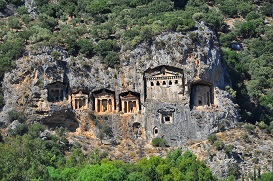

Antik Çağ’da ticari açıdan önemli bir liman kenti olan Kaunos, zamanla denizin alüvyonlarla dolmasıyla liman özelliğini kaybetmiştir.
Tarihin babası Heredot’a göre Kaunoslular Karia’nın yerli halkındandı ama kendilerini Giritli sayıyorlardı. Coğrafyacı Strabon da Kaunos’un tersanesinin ve ağzı kapanabilen bir limanının bulunduğunu yazıyor. Kenti ikiz kızkardeşi ile uygunsuz ilişki kurduğu için sürülen Miletos’un oğlu Kaunos kurmuş. Dalyan’dan da görülebilen kaya mezarları ise MÖ 4. yy’da yapılmış, daha sonraları Roma Dönemi’nde de kullanılmış. Lykia tipi mezarların içinde ölülerin üzerine yatırıldığı üç taş yatak bulunmaktadır. Cephede iki İon sütunu, sütunların üzerinde friz ve alınlık görülmektedir. Alınlıkların birinde arslan kabartmaları vardır.
Kentin limanı akropolün aşağısındaki Sülüklü Göl’dü.O zaman deniz Kaunos’un akropolüne kadar gelmekteydi.
Perslerin Anadolu’yu bütünüyle ele geçirmesi üzerine kent Mausolos’un yönetimine girdi. MÖ 334’de İskender’in Persleri yenmesi üzerine Prenses Ada’nın, sonra Antigonos’un, daha sonra Ptolemaios’un yönetimine girdi. Rodos Krallığı, Bergama Krallığı ve Roma İmparatorluğu egemenlikleri altında kaldı. Limanın dolmasıyla önemini yitirmeye başladı.
Akropol 152 metre yükseklikteki tepeye kurulmuştur. Surların kuzey yönünde olanı Orta Çağ’dan kalmadır. Uzun sur limanın kuzey yönünden başlayıp Dalyan Köyü’nün ilerlerindeki sarp kayalığa kadar uzanıyor. Surun kuzey kısmı Mausolos döneminde yapılmıştı. Kuzeybatı yönündekiler Helenistik Dönem’dendir. Limana doğru olanlar ise Arkaik Devir’den kalmadır.
Tiyatro akropolün eteğindedir. 33 Oturma sırası bulunmaktadır. Tiyatronun batı yönündeki yapı kalıntılarından biri bazilika tipi kiliseye aittir. Diğerleri Roma Hamamı ve Tapınağı’na aittir.
Aşağıda tamamlanmayan bir daire biçiminde örülmüş ve yivsiz sütunları bulunan yapının arkasında üç basamakla yükseltilmiş podyum bulunuyor. Burada tapınağın kalıntıları görülüyor. Daire biçimindeki yapının ne olduğu ise bilinemiyor.
Eski liman olan Sülüklü Göl’ün kuzeyinde yapılan kazılarda stoa ortaya çıkarıldı. Çevresinde bir çok heykel kaidesi bulundu, ama heykeller bulunamadı. Stoanın yakınındaki çeşme restore edilmiştir.
